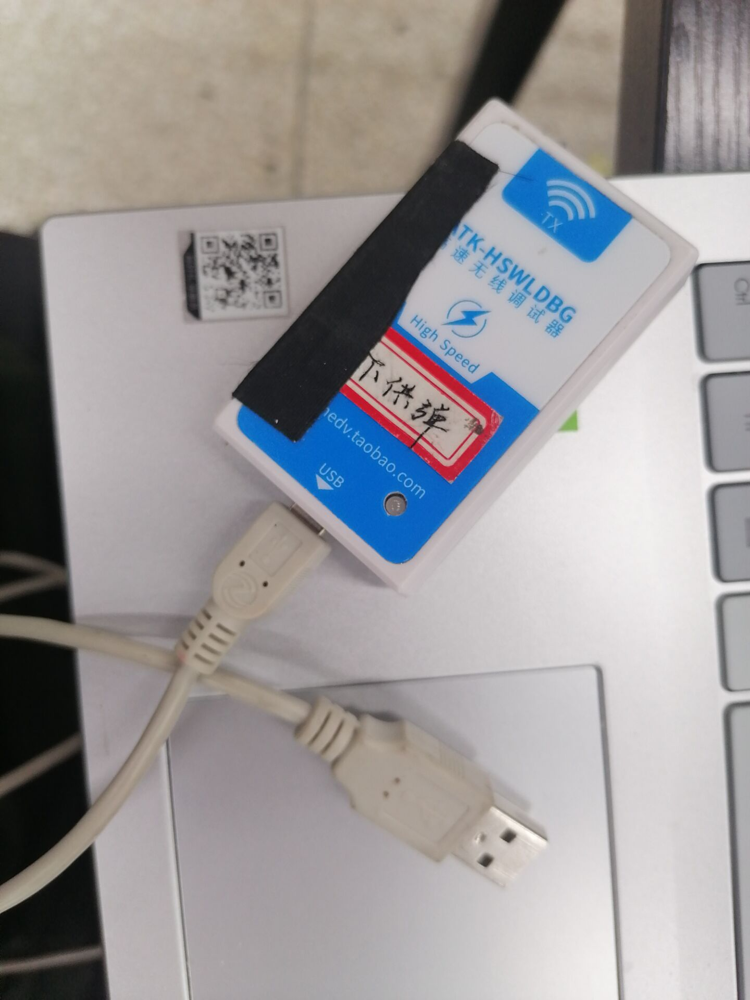
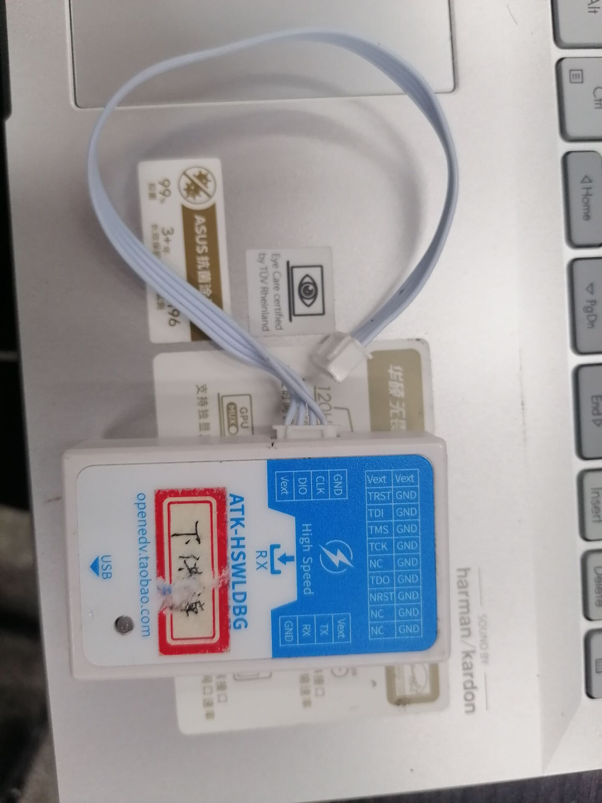

轮腿平衡步兵总结 - 调试工具篇
J-link RTT
若需要明白如何部署 J-link RTT Viewer 或者如何使用，请查阅该文章STM32 实现 SEGGER RTT 打印
在平衡步兵代码中，可以通过定义宏定义 DEBUG_MODE 来使能 RTT Viewer 功能。
通过宏定义的封装，可以实现日志形式的输出。
// RTT
#define PRINTF(str, ...) \
SEGGER_RTT_SetTerminal(0); \
SEGGER_RTT_printf(0, str, ##__VA_ARGS__) // 字符串发送
#define PRINTF_F(str_temp, str, format) \
sprintf(str_temp, str, format); \
SEGGER_RTT_SetTerminal(0); \
SEGGER_RTT_printf(0, str_temp); // 带浮点数的发送
#define LOG_PROTO(window, type, color, format, ...) \
SEGGER_RTT_printf(window, " %s%s" format "\r\n%s", \
color, \
type, \
##__VA_ARGS__, \
RTT_CTRL_RESET)
/* 清屏*/
#define LOG_CLEAR() SEGGER_RTT_WriteString(0, " " RTT_CTRL_CLEAR)
/* 无颜色日志输出 */
#define LOG(format, ...) LOG_PROTO(0, "", "", format, ##__VA_ARGS__)
/* 有颜色格式日志输出 */
#define LOG_INFO(format, ...) LOG_PROTO(0, "[INFO]: ", RTT_CTRL_TEXT_BRIGHT_GREEN, format, ##__VA_ARGS__)
#define LOG_WARNING(format, ...) LOG_PROTO(0, "[WARNING]: ", RTT_CTRL_TEXT_BRIGHT_YELLOW, format, ##__VA_ARGS__)
#define LOG_ERROR(format, ...) LOG_PROTO(0, "[ERROR]: ", RTT_CTRL_TEXT_BRIGHT_RED, format, ##__VA_ARGS__)
#define LOG_FATAL(format, ...) LOG_PROTO(0, "[FATAL]: ", RTT_CTRL_TEXT_BRIGHT_BLUE, format, ##__VA_ARGS__)
Jscope RTT Mode
该模式主要实现高速曲线绘制，可以参考以下博客:利用 J-Scope RTT 模式实现高速（20K）曲线打印
在平衡步兵代码中，可以通过定义宏定义 JSCOPE_RTT_MODE 来使能 Jscope RTT Mode 功能。
FreeRTOS 性能测试模块
该模块可以统计每个任务占用的 CPU 占有率，以及每个任务的堆栈使用情况，可以通过该模块判断哪个任务占用 CPU 时间长从而合理优化其运行时间，通过判断任务堆栈使用剩余量来增加或减少给予该任务的堆栈大小。
参考该博客FreeRTOS 学习笔记（11）——CPU 使用率统计
在平衡步兵代码中，可以通过定义宏定义 DEBUG_MODE_FREERTOS 来使能 FreeRTOS 性能测试模块。
计时器模块
在平衡步兵代码中，采用了 TIM2 作为一个单独的计时器，该计时器主要用来实现精准延时，辅助 debug 使用。
丢帧估计
/**
* @brief 计算两次调用之间的时间差
* @param[in] cnt_last 上一次计数值
*/
float GetDeltaT(uint32_t *cnt_last)
{
volatile uint32_t cnt_now = COUNTER_TIMx->CNT;
float dt = ((uint32_t)(cnt_now - *cnt_last)) / ((float)(COUNTER_SAMPLING));
*cnt_last = cnt_now;
return dt;
}
以上函数能算出两次调用之间的耗时，通过该耗时能够判断帧率是否符合要求以及丢帧帧数判断。例如:
void LossUpdate(Loss_Debugger *loss_debugger, float thresh_t)
{
loss_debugger->recv_msgs_num++;
loss_debugger->can_dt = GetDeltaT(&loss_debugger->last_can_cnt);
if (loss_debugger->can_dt > thresh_t)
{
loss_debugger->loss_num++;
}
}
程序耗时估计
GetDeltaT(&global_debugger.robot_debugger.last_cnt);
KF_Wheel_Accel_Update(speed,
balance_infantry.INS->MotionAccel_n[1], 0.001);
global_debugger.robot_debugger.dt = GetDeltaT(&global_debugger.robot_debugger.last_cnt);
精准延时
/**
* @brief 延时 /us
* @param[in] void
*/
void Delay(uint32_t Delay)
{
volatile uint32_t tickstart = COUNTER_TIMx->CNT;
uint32_t wait = Delay;
while ((COUNTER_TIMx->CNT - tickstart) < wait)
{
}
}
void DelayTo(volatile uint32_t *tickstart, uint32_t Delay)
{
uint32_t wait = Delay;
while ((COUNTER_TIMx->CNT - *tickstart) < wait)
{
}
}
LED
调试时，可通过 LED 的亮灯情况判断当前机器人的状态。通过以下宏定义封装：
#define LED_R_RCC_AHBxPeriphClockCmd RCC_AHB1PeriphClockCmd
#define LED_R_RCC_AHBxPeriph_GPIOx RCC_AHB1Periph_GPIOC
#define LED_R_GPIOx GPIOC
#define LED_R_GPIO_Pin_x GPIO_Pin_9
#define LED_B_RCC_AHBxPeriphClockCmd RCC_AHB1PeriphClockCmd
#define LED_B_RCC_AHBxPeriph_GPIOx RCC_AHB1Periph_GPIOC
#define LED_B_GPIOx GPIOC
#define LED_B_GPIO_Pin_x GPIO_Pin_8
#define LED_R_ON GPIO_ResetBits(LED_R_GPIOx, LED_R_GPIO_Pin_x)
#define LED_R_OFF GPIO_SetBits(LED_R_GPIOx, LED_R_GPIO_Pin_x)
#define LED_B_ON GPIO_ResetBits(LED_B_GPIOx, LED_B_GPIO_Pin_x)
#define LED_B_OFF GPIO_SetBits(LED_B_GPIOx, LED_B_GPIO_Pin_x)
#define ONLY_LED_B_ON \
LED_B_ON; \
LED_R_OFF
#define ONLY_LED_R_ON \
LED_R_ON; \
LED_B_OFF
#define CLOLOR_LED_ON \
LED_R_ON; \
LED_B_ON
#define ALL_LED_OFF \
LED_R_OFF; \
LED_B_OFF
无线调试器连 SWD 接口
 只需要电脑端 USB 连接发送端,接收端连接板子 SWD 接口(注意线序)，即可正常使用 Keil 下载代码，进入 Debug 模式等等。
蓝牙/WIFI/无线调试器 + VOFA+
参考以下博客Vofa+使用笔记（1）：用 Vofa+通过串口连接显示波形
在平衡步兵代码中的 BlueToothTask 中，则是通过以下代码发送需要显示在 VOFA+中的数据。
// 电容功能测试
data.fdata[0] = INA260_1.Power / 1000.0f;
data.fdata[1] = referee_data.Power_Heat_Data.chassis_power;
data.fdata[2] = buffer_energy.buffering_energy;
data.fdata[3] = super_power.actual_vol;
data.fdata[4] = (INA260_1.Power - INA260_2.Power) / 1000.0f;
data.fdata[5] = balance_infantry.state_vector[STATE_X_V];
BLUE_TOOTHSendData(&data);
掉线检测任务(Offline_task)
该任务逻辑比较简单，即通过接受传感器帧数来判断是否有传感器掉线，同时该任务也会对电机保护情况进行观测，若有错误则立即反馈异常，交给其它任务处理该异常。
电路测试任务(Test_task)
给电路测试用的任务，可以测试底盘板 CAN1,CAN2,两个 RS485 接口是否有信号。在平衡步兵代码中，可以通过使 TEST_TASK_ON 为 1 使能测试任务。
轮毂电机系统辨识任务(MF9025_IdentifyTask)
辨识轮毂电机转动惯量的任务,可以通过使 MF9025_IDENTIFY_ON 宏定义为 1 使能该任务，具体可以辨识思路可以参考 《轮腿平衡步兵总结》 - 《功能研发》 - 《轮毂电机参数辨识》
看门狗设计
该看门狗只有在所有关键任务都喂狗之后，才算整个系统运行正常而不重启，该目标的实现是通过任务组来实现，即
xCreatedEventGroup = xEventGroupCreate(); // 创建任务组
/* 等待所有任务发来事件标志 */
uxBits = xEventGroupWaitBits(xCreatedEventGroup, /* 事件标志组句柄 */
TASK_BIT_ALL, /* 等待TASK_BIT_ALL被设置 */
pdTRUE, /* 退出前TASK_BIT_ALL被清除，这里是TASK_BIT_ALL都被设置才表示“退出”*/
pdTRUE, /* 设置为pdTRUE表示等待TASK_BIT_ALL都被设置*/
pdMS_TO_TICKS(xTicksToWait)); /* 等待延迟时间 */
if ((uxBits & TASK_BIT_ALL) == TASK_BIT_ALL) // 判断各个任务是否执行
{
IWDG_Feed();
}
喂狗则是通过
/* 喂狗 */
xEventGroupSetBits(xCreatedEventGroup, CHASIS_CONTROL_BIT); // 标志位置一
这样的话，只要有一个关键任务没有完成喂狗操作，则整个系统都会重启，从而保障了整个系统的稳定性。
Jscope
Vscode + Ozone 调试
使用 Vscode 代替 Keil 进行代码编辑有以下几个好处(包括但不限于)
Vscode 界面美观
代码提示，代码可自动缩进对齐
可通过 Vscode 插件配合提高写代码效率。
详细使用方法可以参考 《轮腿平衡步兵总结》 - 《功能研发》 - 《Ozone+Vscode 嵌入式开发》